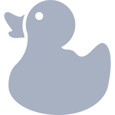
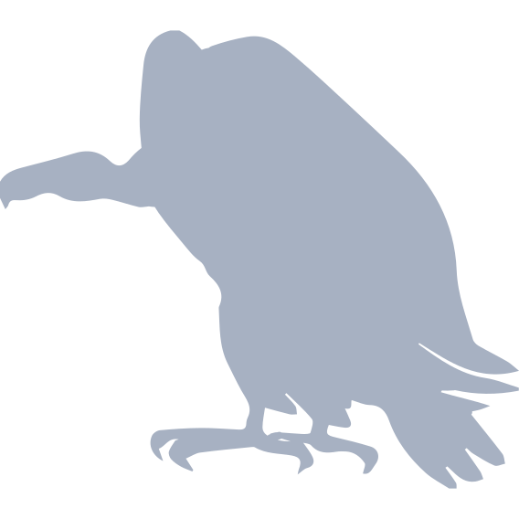
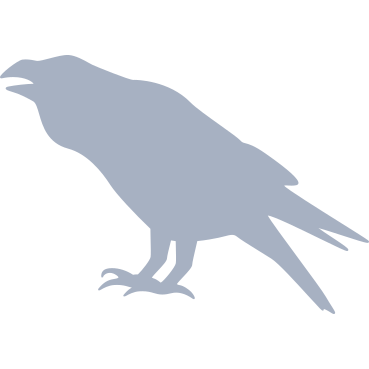
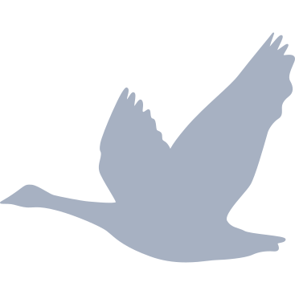

GIS开发小组
丁冠辰、徐明月、翁永椿、张期中
GIS
生命的轨迹

Mergus Merganser
Cesium轨迹图
echarts 信息统计图
相关链接

Turkey Vulture
Cesium轨迹图
echarts 信息统计图
相关链接

red-backed shrike
Cesium轨迹图
echarts 信息统计图
相关链接
Swainson's Hawks
Cesium轨迹图
echarts 信息统计图
相关链接
hard-shelled turtle
Cesium轨迹图
相关链接

white fronted goose
Cesium轨迹图
相关链接
barnacle geese
Cesium轨迹图
相关链接
开发工具
Cesium
echarts
ArcGIS
jQuery
Three.js
数据来源
MoveBank
OIE
Data.gov
Ecological Data
Github
Contact us
生命的轨迹
关闭操作
定位当前选项卡
关闭全部选项卡
关闭其他选项卡
退出
设置
通知
其他
设置
系统设置。
标题
干嘛干嘛，按钮注释了
固定顶部
固定宽度
皮肤选择
默认皮肤
最新通知
您当前有3条未读信息
据天津日报报道：瑞海公司董事长于学伟，副董事长董社轩等10人在13日上午已被控制。
今天 4:21
HCY48之音乐大魔王会员专属皮肤已上线，快来一键换装拥有他，宣告你对华晨宇的爱吧！
昨天 2:45
写的好！与您分享
昨天 1:10
最新任务
您当前有4个任务，1个已完成
9小时以后
市场调研
按要求接收教材；
已完成： 22%
项目截止： 4:00 - 2015.10.01
9小时以后
拆迁阶段
科研项目研究进展报告 项目编号: 项目名称: 项目负责人:
已完成： 22%
项目截止： 4:00 - 2015.10.01
9小时以后
建设阶段
编写目的编写本项目进度报告的目的在于更好的控制软件开发的时间,对团队成员的 开发进度作出一个合理的比对
已完成： 48%
9小时以后
获证开盘
编写目的编写本项目进度报告的目的在于更好的控制软件开发的时间,对团队成员的 开发进度作出一个合理的比对
已完成： 14%